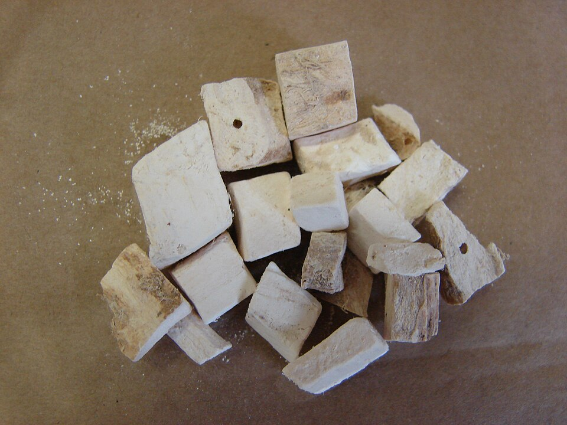

Gégēn · Kudzu root葛根
Puerariae Lobatae Radix · Exterior-releasing herbs: herbs that disperse wind-heatPuerariae Lobatae Radix · 解表药·发散风热药




- Flavour · nature性味
- sweet, acrid; cool甘、辛，凉
- Channels归经
- Spleen, Stomach, Lung脾、胃、肺经
- Direction升降浮沉
- Moist and ascending; it raises clear yang and lifts stomach qi, releases the muscle layer to bring down fever, generates fluids to relieve thirst and helps rashes to emerge; roasted in damp paper it leans towards raising yang and stopping diarrhoea质润而升，善升发清阳、鼓舞胃气上行；既能解肌退热，又能生津止渴、透发麻疹；煨用偏于升阳止泻
- Toxicity毒性
- Non-toxic无毒
- Dose (pharmacopoeia)用量（药典）
- 10–15 g (ceiling 15 g)（上限 15 克）
Decocted; use raw to release the muscle layer, help rashes emerge and generate fluids, and roasted to raise yang and stop diarrhoea煎服；解肌退热、透疹、生津宜生用，升阳止泻宜煨用 - Pregnancy孕期
- Caution in pregnancy孕妇慎用 The pharmacopoeia and textbooks list no pregnancy restriction, but the Health Canada TCMI monograph requires products to be labelled not for use during pregnancy or breastfeeding; this is not proof that it is safe in pregnancy. Do not self-treat in pregnancy; ask a licensed health professional.药典、教材未见孕期禁忌，但加拿大卫生部 TCMI 专论要求产品标注孕期或哺乳期勿用；这不等于已证明孕期安全，孕期请勿自行服用，须经持照医务人员判断。
- Health Canada加拿大卫生部
- Health Canada: monograph加拿大卫生部：有专论 The Health Canada NHPID Traditional Chinese Medicine Ingredients (TCMI) monograph (May 29, 2026) includes Ge Gen (Pueraria montana var. lobata, Radix Puerariae Lobatae) in Table 3, allowable only when prepared and used according to the NHPID specifications. All products must be labelled: do not use during pregnancy or breastfeeding; consult a health professional before use if taking prescription medication or if you have a serious condition or acute infection; stop use and see a health professional if symptoms persist or worsen.加拿大卫生部 NHPID 的传统中药成分（TCMI）专论（2026 年 5 月 29 日）收录葛根（Pueraria montana var. lobata，Ge gen，Radix Puerariae Lobatae），列于表 3，仅在按 NHPID 规格制备和使用时允许。专论要求所有产品标注：孕期或哺乳期勿用；服处方药、有严重疾病或急性感染者用前问医务人员；症状持续或加重即停用就医。
- Conservation资源与保护
- Kudzu is a common vine, both cultivated and wild, with ample medicinal supply; no CITES listing is known (to be verified).葛根为常见栽培与野生藤本，药用来源充足；未见国际贸易公约（CITES）管制（待核）。
- Source来源
- Pueraria lobata (Willd.) Ohwi. Dried root of Pueraria lobata, pea family; commonly called Ye GePueraria lobata (Willd.) Ohwi（野葛）。豆科植物野葛的干燥根；习称「野葛」
Traditional actions and indications功效与主治（传统）
🏛 Traditional statements, not efficacy claims; the modern evidence is graded further down.以下为传统说法，不是疗效主张；现代证据见下文分级。
- Releases the muscle layer and clears fever解肌退热
- Generates fluids and relieves thirst生津止渴
- Helps rashes to emerge透疹
- Raises yang and stops diarrhoea升阳止泻
- Frees the channels and collaterals通经活络
- Resolves alcohol toxicity解酒毒
Fever and headache from external contraction with a stiff, aching neck and back; thirst and wasting-thirst; measles rash that does not come out; heat dysentery and diarrhoea; dizziness and headache, hemiplegia after wind-stroke, chest painful obstruction; alcohol injury to the middle.外感发热头痛、项背强痛；口渴、消渴；麻疹不透；热痢、泄泻；眩晕头痛、中风偏瘫、胸痹心痛；酒毒伤中。
How to recognise it怎么认
Growing植株 A perennial deciduous vine covered in long yellow bristly hairs, with a thick, fleshy tuberous root. Trifoliate leaves with a rhombic-ovoid terminal leaflet; purple-red pea-type flowers in long racemes in autumn; flat, linear pods densely covered with yellow hairs. It climbs over slopes and scrub and spreads vigorously.多年生落叶藤本，全株被黄色长硬毛；块根肥厚粗大。三出复叶，顶生小叶菱状卵形；秋季开紫红色蝶形花，排成长总状花序；荚果线形，扁平，密被黄色长硬毛。常攀援于山坡、灌丛，蔓延力强。
Decoction pieces饮片 Irregular thick slices, coarse shreds, or small cubes 5–12 mm along each side; pale brown to brown, wrinkled, rough skin; yellowish-white to pale yellow-brown cut face with inconspicuous grain, starchy and fibrous. Faint smell, slightly sweet taste.多为不规则厚片、粗丝或边长 5–12 毫米的方块状小块；外皮淡棕色至棕色，有纵皱纹，粗糙；切面黄白色至淡黄棕色，纹理不明显，富粉性，有纤维。气微，味微甜。
Processing炮制
- Raw Ge Gen生葛根：: Cool; releases the muscle layer, generates fluids and helps rashes emerge性凉，解肌退热、生津止渴、透发麻疹
- Roasted Ge Gen煨葛根：: Leans towards raising yang and stopping diarrhoea, used for spleen-deficiency diarrhoea and damp-heat dysentery偏于升阳止泻，用于脾虚泄泻、湿热泻痢
Cautions and incompatibilities使用注意与配伍禁忌
The pharmacopoeia lists no specific contraindication. Animal work suggests Ge Gen may weaken the anticoagulant effect of warfarin, so people on warfarin should tell their prescriber and have INR monitored. A review advises treating it like ALDH2 inhibitors such as disulfiram, so take care with disulfiram or any risk linked to acetaldehyde. Caution with exterior deficiency and spontaneous sweating, or with deficient cold (textbook position, to be verified). The Health Canada monograph requires the label statement: do not use during pregnancy or breastfeeding.药典未列专门禁忌。动物实验提示葛根可能减弱华法林的抗凝作用，服华法林者用前应告知医师并监测 INR。综述建议参照双硫仑（戒酒硫）类 ALDH2 抑制剂的注意事项，服用戒酒硫或有乙醛相关风险者宜谨慎。表虚多汗、虚寒者宜慎用（教材口径，待核）。加拿大卫生部专论要求标注：孕期或哺乳期勿用。
Interactions with medicines与西药的相互作用
- E4 Warfarin华法林：: Animal experiment: Ge Gen speeds the phase I liver metabolism of warfarin and alters expression of vitamin K epoxide reductase (VKOR) and thrombomodulin (TM), offsetting its anticoagulant effect. Human data are lacking; people on warfarin should tell their prescriber and have INR monitored.动物实验：葛根可加快华法林的肝脏 I 相代谢，并影响维生素 K 环氧化物还原酶（VKOR）与血栓调节蛋白（TM）的表达，抵消其抗凝效果。人体数据待证实，服华法林者应告知医师并监测 INR。
- E3 Disulfiram双硫仑（戒酒硫）：: A review states that recommendations for kudzu root should resemble those for the ALDH2 inhibitor disulfiram, as it contains ALDH2-inhibiting constituents and may allow acetaldehyde to build up with alcohol; combined use needs a prescriber's assessment.综述指出葛根的使用建议应与 ALDH2 抑制剂双硫仑相似，因其含有 ALDH2 抑制成分，与酒精合用可能致乙醛蓄积；合用须由医师评估。
Modern research, graded现代研究（分级）
- E1 The Natural Standard systematic review of kudzu compiles clinical trials, folkloric use, pharmacology, interactions, adverse effects, toxicology and dosing; this entry only lists what the review covers and is not cited as evidence of benefit.Natural Standard 对野葛（kudzu）的系统综述汇集了临床试验、传统用法、药理、相互作用、不良反应、毒理与剂量等资料；本条只说明综述收了哪些资料，不作疗效依据。
- E3 A controlled clinical trial of kudzu root extract in moderate drinkers found no disturbance of their sleep/wake cycle. The study tested an extract, not the decocted slices, in moderate drinkers.一项对中度饮酒者的对照临床试验（葛根提取物）观察到，该提取物未扰乱其睡眠—觉醒周期。该研究对象是提取物而非本饮片煎剂，且样本为中度饮酒者。
- E1 A review summarises experimental evidence on Gegen and its flavonoid fractions in diabetes, covering several mechanisms such as insulin resistance, insulin release and glucose absorption; these are mostly mechanistic and experimental studies of the root or its flavonoid fractions and do not support efficacy claims.综述汇总了葛根及其葛根黄酮类成分与糖尿病相关的实验证据，涉及胰岛素抵抗、胰岛素分泌、葡萄糖吸收等多种机制；这些多为机制与实验层面的研究，研究对象是葛根或其黄酮提取物与成分，不足以支持疗效主张。
- E5 A network pharmacology study analysed active ingredients of kudzu root and their osteoporosis-related targets; this is computational and cell-level mechanism work on its active ingredients, not human evidence.网络药理学研究分析了葛根活性成分及其骨质疏松相关靶点；这是计算与细胞层面的机制研究，研究对象是葛根活性成分，不能当作人体证据。
- E5 A laboratory study found that kudzu root extract suppressed HIV-1 attachment to cells in vitro; it concerns an extract, not the sliced root.实验室研究发现葛根提取物在细胞实验中抑制 HIV-1 与细胞的结合；这是体外研究，研究对象是提取物。
In the classics古籍原文
「葛根味甘平。主治消渴，身大熱，嘔吐，諸痹，起陰氣，解諸毒」——神农本草经
Shennong Bencao Jing (Divine Farmer's Materia Medica)
The Shennong Bencao Jing lists Ge Gen for wasting-thirst, high body heat, vomiting and various impediments, and says it 'raises yin qi' and 'resolves various toxins'. Later physicians used Ge Gen to generate fluids and release the muscle layer, and read 'raising yin qi' as lifting clear yang and stomach qi; that is their interpretation, which the original line does not spell out.《神农本草经》记葛根主治消渴、身大热、呕吐、诸痹，能「起阴氣」「解诸毒」。后世用葛根生津止渴、解肌退热，并把「起阴气」讲成升发清阳、鼓舞胃气，那是后世医家的解释，原文没有展开。
Where it is used: the web串联：它在哪些方里、连到哪里
Classical formulas (Shanghan, Jingui)经方（伤寒、金匮）
| Formula方 | Role角色 | Dose: original / today剂量：原书／今用 | Partners in the formula同方配伍 |
|---|---|---|---|
| Kudzu, Scutellaria, and Coptis Decoction葛根黄芩黄连汤 | Monarch君 | original text: see the Chinese original半斤 | Gāncǎo (Licorice root)甘草 · Huángqín (Baikal skullcap root)黄芩 · Coptis rhizome (Coptidis Rhizoma)黄连 |
| Kudzu Decoction葛根汤 | Monarch君 | original text: see the Chinese original四兩 | Máhuáng (Ephedra herb)麻黄 · Guìzhī (Cassia twig)桂枝 · Fresh ginger rhizome (Zingiber officinale)生姜 · Gāncǎo (Licorice root)甘草 · Báisháo (White peony root)白芍 · Jujube fruit (Ziziphus jujuba)大枣 |
| Cinnamon Twig Decoction plus Kudzu桂枝加葛根汤 | Monarch君 | original text: see the Chinese original四两 | Guìzhī (Cassia twig)桂枝 · Báisháo (White peony root)白芍 · Máhuáng (Ephedra herb)麻黄 · Sheng Jiang (fresh ginger)生姜 · Da Zao (jujube)大枣 · Gāncǎo (Licorice root)甘草 |
Later formulas (Song to Qing)时方（宋元明清）
| Formula方 | Role角色 | Dose: original / today剂量：原书／今用 | Partners in the formula同方配伍 |
|---|---|---|---|
| Bupleurum and Kudzu Muscle-Releasing Decoction柴葛解肌汤 | Monarch君 | original text: see the Chinese original原文未注分量 | Sheng Jiang (fresh ginger)生姜 · Da Zao (jujube)大枣 · Cháihú (Bupleurum root)柴胡 · Qiang Huo (notopterygium)羌活 · Bai Zhi (angelica dahurica root)白芷 · Huángqín (Baikal skullcap root)黄芩 · Shígāo (Gypsum)石膏 · Báisháo (White peony root)白芍 · Jie Geng (platycodon root)桔梗 · Gāncǎo (Licorice root)甘草 |
| Cimicifuga and Pueraria Decoction升麻葛根汤 | Minister臣 | original text: see the Chinese original二錢 | Shēngmá (Cimicifuga rhizome)升麻 · Báisháo (White peony root)白芍 · Gāncǎo (Licorice root)甘草 |
| Scallion and Prepared Soybean Decoction葱豉汤 | Assistant佐 | original text: see the Chinese original三两（无汗时加） | Cong Bai (scallion white)葱白 · Dan Dou Chi (prepared soybean)淡豆豉 |
Folk and single-herb remedies偏方、验方、单方
| Formula方 | Use用法 | Self-use能否自用 |
|---|---|---|
| Kudzu starch and millet porridge (irritability with heat and thirst)葛粉粟米粥（烦躁热渴） | Food食疗 | Low-risk household use, within the safety line below低风险家用，守住下面的安全线 |
Patterns reached through these formulas经由这些方连到的证
Exam notes (HER)考点（HER）
HER essentials: (1) Ge Gen is a wind-heat-dispersing herb that releases the muscle layer, especially suited to exterior patterns with a stiff neck and back; (2) raw releases the muscle layer, helps rashes emerge and generates fluids, while roasted raises yang and stops diarrhoea; (3) compare with Chai Hu and Sheng Ma, the other lifting and dispersing herbs: Ge Gen leans towards generating fluids and relaxing sinews (stiff neck and back), Chai Hu towards soothing the liver and harmonising shaoyang, Sheng Ma towards lifting yang and clearing heat and toxins; (4) the classical Ge Gen Tang for taiyang disease with a stiff neck and back is its typical use.HER 必考：①葛根为发散风热药，善解肌退热，对外感表证兼项背强痛尤宜；②生用解肌、透疹、生津，煨用升阳止泻，二者功效有别；③葛根与柴胡、升麻同属升散之品，注意区分：葛根偏于生津、舒筋（项背强），柴胡偏于疏肝、和解少阳，升麻偏于升阳举陷、清热解毒；④古方葛根汤用于太阳病项背强，是葛根的典型用法。
Sources依据
- Chinese Pharmacopoeia Commission. Pharmacopoeia of the People's Republic of China, 2020 edition, vol. I国家药典委员会《中华人民共和国药典》2020 年版一部
- Zhong Gansheng (ed.). Chinese Materia Medica (national TCM higher-education textbook series)钟赣生主编《中药学》（全国中医药行业高等教育规划教材）
- NCCIH. Herb-Drug Interactions: What the Science Says ↗
- Health Canada, NHPID monograph: Traditional Chinese Medicine Ingredients (TCMI), May 29, 2026 ↗
- Ulbricht et al. An evidence-based systematic review of kudzu (Pueraria lobata) by the Natural Standard Research Collaboration. J Diet Suppl. 2015 ↗
- Yang et al. Pueraria lobata for Diabetes Mellitus: Past, Present and Future. Am J Chin Med. 2019 ↗
- Bracken et al. Kudzu root extract does not perturb the sleep/wake cycle of moderate drinkers. J Altern Complement Med. 2011 ↗
- Liu et al. Network Pharmacology Analysis and Biological Validation Systemically Identified the Active Ingredients and Molecular Targets of Kudzu Root on Osteoporosis. Int J Mol Sci. 2025 ↗
- Mediouni et al. Potent suppression of HIV-1 cell attachment by Kudzu root extract. Retrovirology. 2018 ↗
- Ge et al. Radix Puerariae lobatae (Gegen) suppresses the anticoagulation effect of warfarin: a pharmacokinetic and pharmacodynamics study. Chin Med. 2016 ↗
- McGregor et al. Pueraria lobata (Kudzu root) hangover remedies and acetaldehyde-associated neoplasm risk. Alcohol. 2007 ↗